Donde cada comunidad te cuenta una historia y cada tradición te comparte un hogar.
La Identidad de Honduras
La identidad hondureña es resultado de la historia,
las tradiciones, los pueblos originarios, las comunidades
afrodescendientes y las diferentes expresiones culturales
que forman parte de Honduras.
La historia nacional, la diversidad étnica y la gastronomía
representan algunos de los principales elementos que permiten
conocer y valorar la identidad cultural del país.
Historia y pensamiento unionista
Francisco Morazán
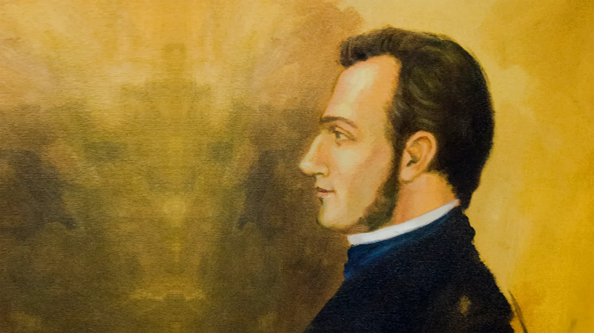
Francisco Morazán
Francisco Morazán fue una de las principales figuras
políticas y militares de Centroamérica durante el
siglo XIX. Nació en Tegucigalpa y tuvo una participación
destacada en los procesos políticos de la región.
Su pensamiento estuvo relacionado con la idea de una
Centroamérica unida. Morazán defendió un proyecto
unionista que buscaba fortalecer los vínculos políticos
entre los territorios centroamericanos.
Su legado forma parte de la memoria histórica de Honduras
y de la historia política centroamericana.
Próceres Patrios
Los próceres patrios son figuras históricas vinculadas con
los procesos de independencia, organización política,
educación y construcción de la identidad nacional hondureña.
Francisco Morazán
Militar y político centroamericano relacionado con el
proyecto de unión de Centroamérica.
José Cecilio del Valle
Intelectual, político y escritor hondureño que participó
en los procesos políticos de la independencia
centroamericana.
Dionisio de Herrera
Político hondureño que tuvo una importante participación
en la organización política de Centroamérica y fue el
primer jefe de Estado de Honduras.
José Trinidad Cabañas
Militar y político hondureño vinculado con los ideales
unionistas centroamericanos.
José Trinidad Reyes
Sacerdote, educador y fundador de la Universidad Nacional
de Honduras, actualmente Universidad Nacional Autónoma
de Honduras.
Etnias Vivas de Honduras
Honduras posee una importante diversidad cultural. Entre los
pueblos indígenas y afrodescendientes se encuentran los
Lencas, Garífunas, Misquitos, Tolupanes y Chortís.
Pueblo Lenca
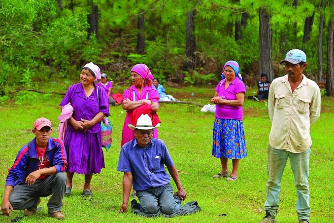
Pueblo Lenca
El pueblo Lenca es uno de los pueblos originarios de
Honduras. Sus comunidades conservan expresiones
culturales, artesanales, agrícolas y religiosas.
Pueblo Garífuna
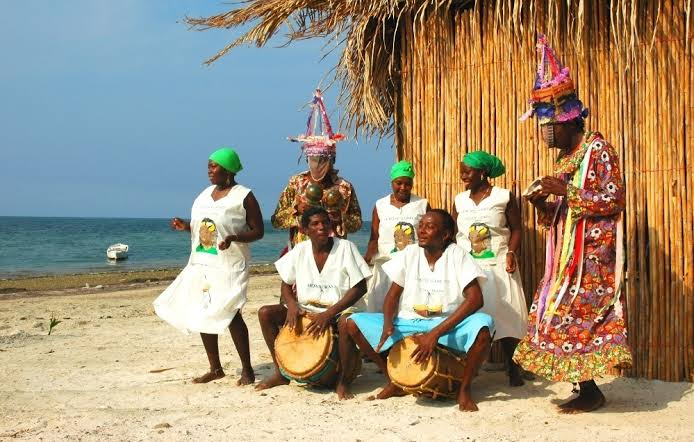
Pueblo Garífuna
El pueblo Garífuna se encuentra principalmente en la
costa caribeña de Honduras. Su cultura destaca por su
música, danza, gastronomía, lengua y tradiciones.
Pueblo Misquito
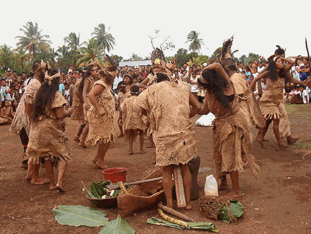
Pueblo Misquito
El pueblo Misquito habita principalmente en la región
de La Moskitia. Mantiene tradiciones relacionadas con
su territorio, sus recursos naturales y su organización
comunitaria.
Pueblo Tolupán
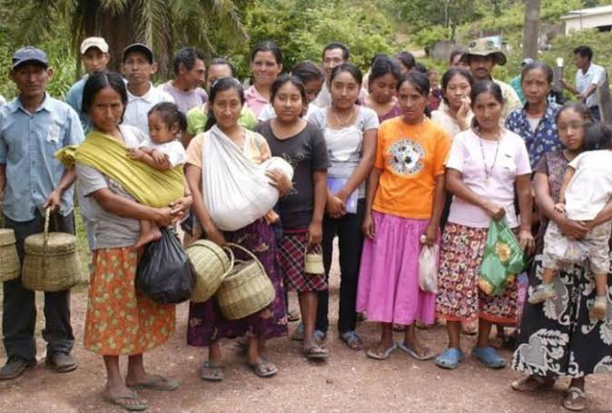
Pueblo Tolupán
El pueblo Tolupán conserva tradiciones y conocimientos
relacionados con su territorio, sus actividades
comunitarias y su relación con la naturaleza.
Pueblo Chortí
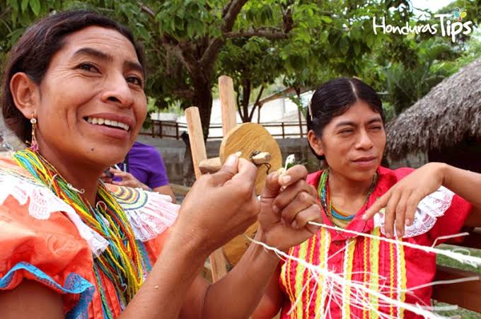
Pueblo Chortí
El pueblo Chortí forma parte de los pueblos originarios
de Honduras y conserva tradiciones culturales,
agrícolas y artesanales.
Gastronomía Típica Nacional
La gastronomía hondureña es una expresión de la diversidad
cultural del país. Sus platos utilizan ingredientes y
técnicas tradicionales de diferentes regiones de Honduras.
Baleadas tradicionales
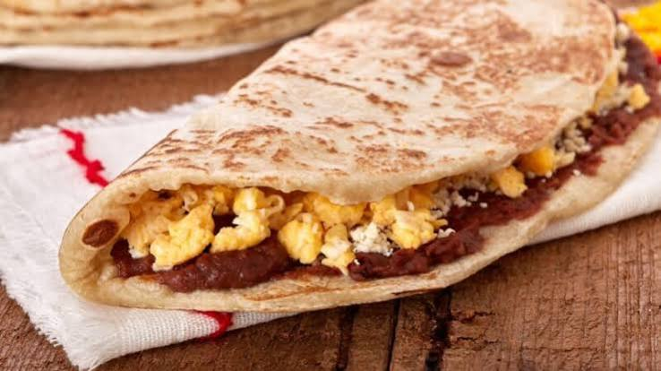
Baleadas tradicionales
La baleada es una de las preparaciones más representativas
de la gastronomía hondureña. Se prepara tradicionalmente
con una tortilla de harina acompañada de frijoles,
queso y otros ingredientes.
Sopa de caracol
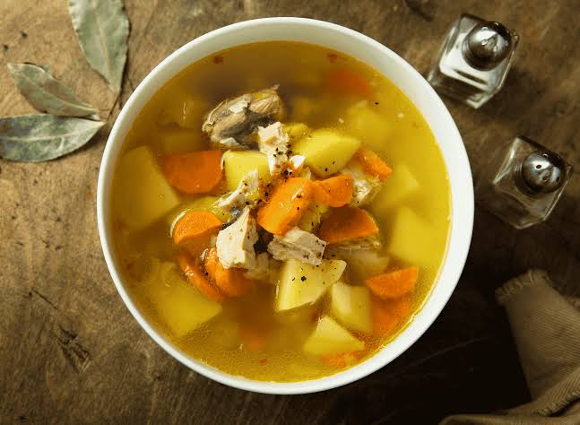
Sopa de caracol
La sopa de caracol es una preparación tradicional de la
costa caribeña de Honduras, elaborada con caracol y
diferentes ingredientes propios de la gastronomía
de la región.
Tikin Xik Garífuna
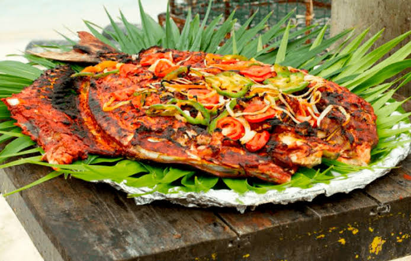
Tikin Xik Garífuna
El Tikin Xik es una preparación de tradición caribeña
basada en pescado y condimentos característicos de la
gastronomía de la región.
Atol de elote
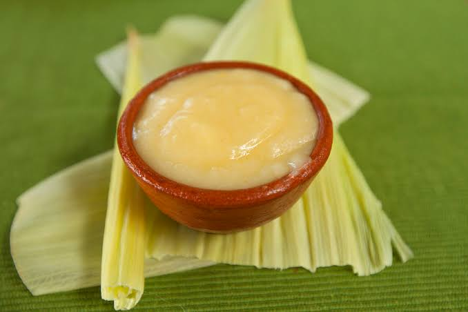
Atol de elote
El atol de elote es una bebida tradicional elaborada
principalmente con maíz. Es consumida en diferentes
regiones del país.
Café de altura
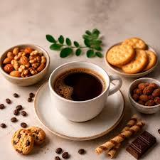
Café de altura de Honduras
El café hondureño se cultiva en diferentes regiones
montañosas del país. Las condiciones de altura y clima
contribuyen a las características particulares de los
cafés producidos en Honduras.
Determinadas regiones y cafés hondureños cuentan con
mecanismos de identificación y protección de origen.